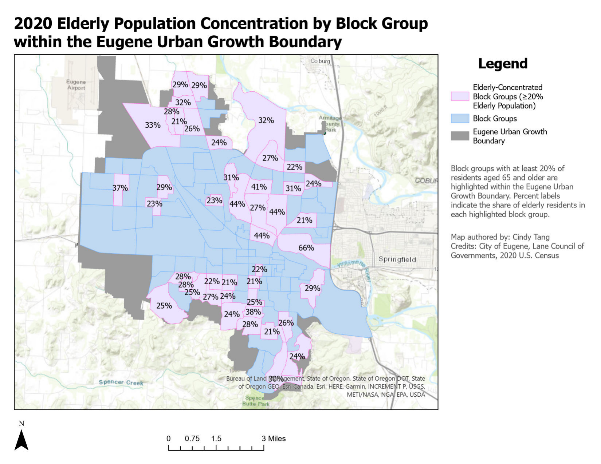

GIS · DEMOGRAPHICS · ACCESS
Elderly Population & Community Access.
A demographic mapping project exploring where older adults are concentrated and how those areas relate to community resources.

process
I joined 2020 demographic data to geographic boundaries and selected neighborhoods where adults 65+ made up more than 20% of the population.
analysis
I used spatial overlays and proximity analysis to compare those higher-concentration areas with bus stops, parks, and community resources.
skills
Data joins · attribute queries · proximity analysis · demographic mapping